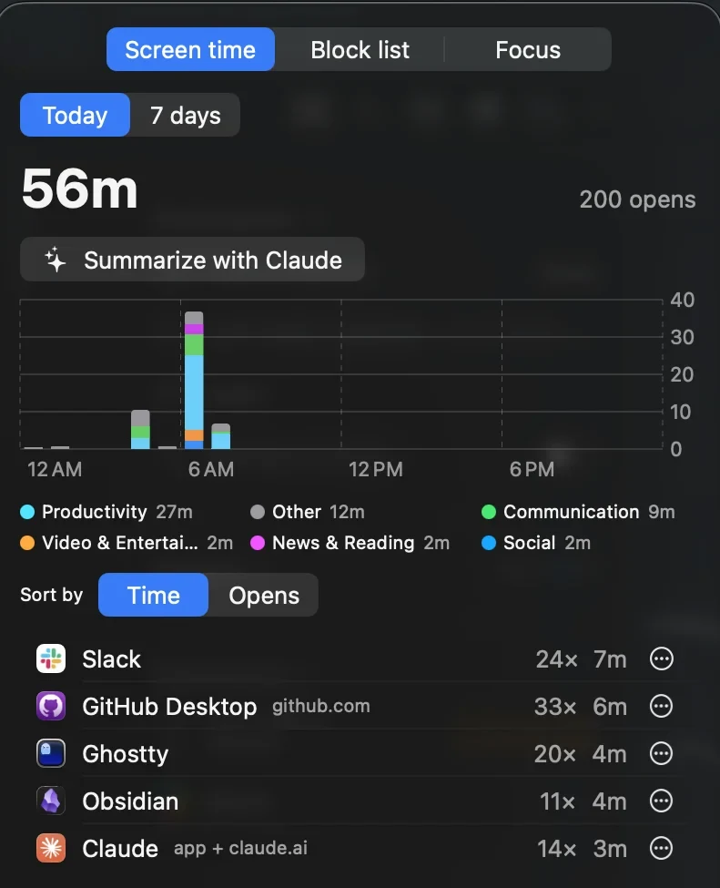
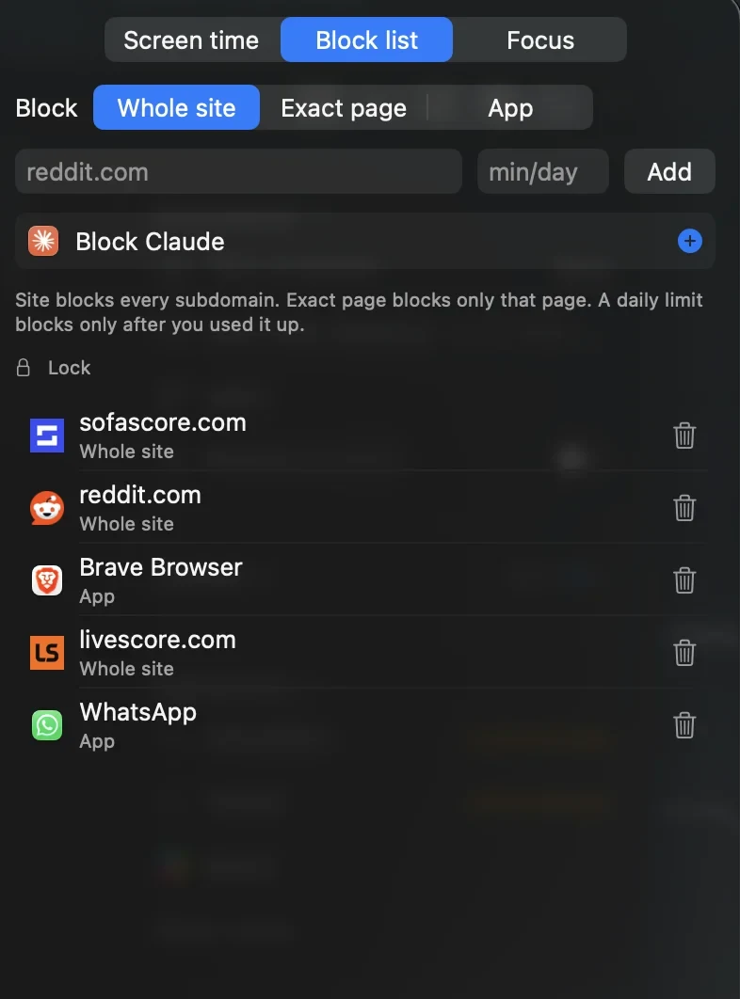
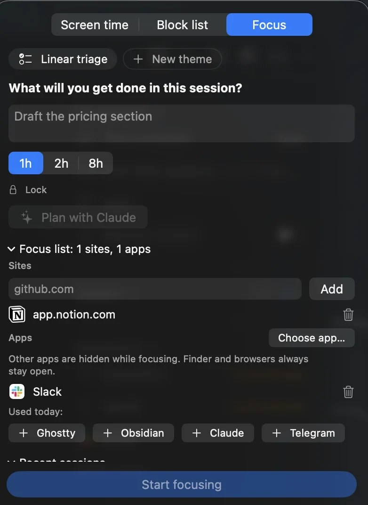
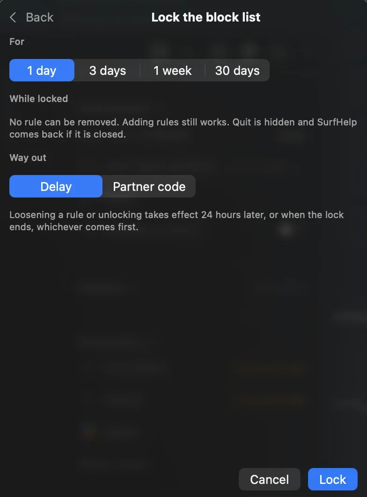

AirGap
AirGap tracks your screen time, blocks distracting apps and websites, and runs focus sessions. It lives in the menu bar and runs in the background, so you don't have to remember to start tracking. There's no server, account or telemetry: everything stays on your Mac.
Install it · Source code · How it works



Features
Screen time
See your time per app and per website, for today or the last 7 days, with a daily chart and how often you opened each one. Time stops counting after 2 minutes without input. You can export it as CSV from Settings.
Block list
Block a whole site (youtube.com, subdomains included), one page (youtube.com/shorts), or an app. Any rule can have a daily limit instead, so it only blocks once you've used up your minutes.
Focus sessions
Write what you'll get done, pick a length, and only the sites and apps on your focus list stay open. Each blocked item can be let through once per session for a quick check. A short check-in at the end asks how it went.
Themes save a session you repeat (inbox triage, reading the news) with its length, checklist and focus list. Reading themes are a hard cap: no pausing and no quick checks.
Commitment locks
Lock a session, a theme or the block list for up to 30 days. While it's locked, Quit is hidden and the app relaunches if it's killed. The only way out is the one you chose up front: a 24-hour delay, or a code someone else holds.

Assistant (optional)
If you have Claude Code or the Codex CLI installed, AirGap can plan a session, reflect on it afterwards, summarize your screen time, sort apps into categories, and decide whether a blocked page is worth opening for the reason you type (up to 3 approved page passes a day).
Install
AirGap is built from source on your Mac and needs macOS 14 or later. You also need Apple's Command Line Tools, and install.sh offers to install them.
git clone https://github.com/arberiii/air-gap.git
cd air-gap
./install.sh
This builds the app, copies it to /Applications/AirGap.app and opens it. To update, run git pull && ./install.sh.
Websites are read and blocked in Safari, Chrome, Brave, Edge, Arc, Vivaldi and Opera. Firefox has no scripting interface, so it isn't supported. The first time AirGap reads a browser's tab, macOS asks for permission.
Privacy
Your data lives in ~/Library/Application Support/AirGap/state.json. Only two things leave your Mac:
- Favicons. Website icons in the screen time list come from Google's favicon service, which sees the host names of the sites you visit. They're cached locally.
- Assistant requests, only if you turn the assistant on. AirGap runs your own
claudeorcodexCLI, which sends the prompt to Anthropic or OpenAI under your account.
Limits
A lock is meant to hold against a tired self, not a determined one. Anyone with a terminal can unload the watchdog, edit state.json or move the clock forward. Browser tabs are polled every 2 seconds, so a blocked page can flash briefly before it's replaced.
AirGap is MIT licensed. Bugs and ideas go to GitHub issues.